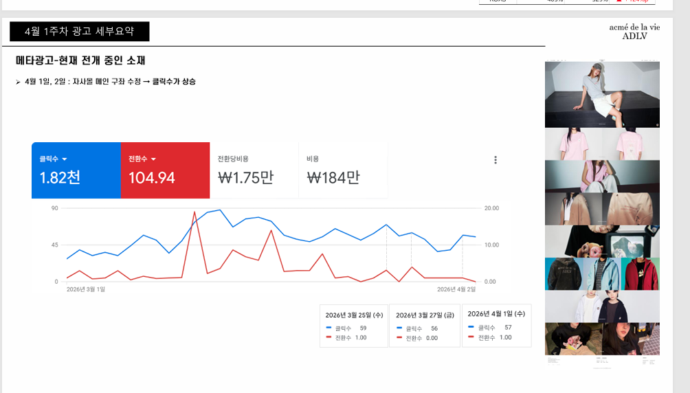

MAIN PAGE
IMPROVEMENT
메인 구좌와 상품 노출 구조를 개선하고 실제 운영 데이터를 통해 반응 변화를 확인한 프로젝트.

REAL OPERATION DATA1.82K클릭수104.94전환수
자사몰 메인 구좌 수정 이후 클릭 상승을 확인. 포트폴리오에는 측정된 사실만 사용했습니다.
기획부터 운영까지,
구매로 이어지는 경험을 디자인합니다.
상품이 어떻게 노출되고, 고객이 어떤 정보를 통해 구매를 결정하는지 고민합니다.
디자인과 운영을 연결해 비즈니스 목표에 맞는 온라인 스토어를 만듭니다.
메인 구좌와 상품 노출 구조를 개선하고 실제 운영 데이터를 통해 반응 변화를 확인한 프로젝트.

자사몰 메인 구좌 수정 이후 클릭 상승을 확인. 포트폴리오에는 측정된 사실만 사용했습니다.
상품 분석부터 컨셉, AI 모델 비주얼 디렉팅, 온라인 콘텐츠 디자인까지 전 과정을 직접 기획.
아트웍 반팔 애니멀드로잉 · 공식 온라인몰 전체 상품 판매량 기준
12 PCS SOLD
단순 제작을 넘어 제품 사양을 분석하고 고객이 이해하기 쉬운 구매 정보로 재구성했습니다.
소재 설명과 구매 정보를 보강하고 상세페이지의 정보 구조를 개선.
원단·충전재·기능 분석 → USP 정의 → 카피라이팅 → 상세 디자인까지 직접 진행.
셀럽·콜라보 콘텐츠의 자료 수급부터 유관부서 커뮤니케이션, 디자인, 수정·컨펌, 웹 적용까지 공개 일정에 맞춰 진행.
강한 IP 아이덴티티와 실제 판매 상품이 함께 보이도록 온라인 상세 콘텐츠의 비주얼 흐름을 설계.
성과 수치보다 IP 해석, 콘텐츠 구성, 비주얼 완성도와 실제 온라인 적용 과정을 보여주는 프로젝트.
E-Commerce Design 자사몰 및 글로벌 온라인 스토어 디자인·운영
Product Content 상품 분석 · USP · 카피 · 상세페이지 기획/디자인
Sales Promotion 시즌 프로모션 · 이벤트 · 메인/카테고리 콘텐츠
Collaboration 셀럽/IP 콘텐츠 · 유관부서 커뮤니케이션 · 일정 관리
Publishing Cafe24 · HTML · CSS · jQuery · Swiper
Global KR · EN · CN · JP 온라인몰 콘텐츠 운영